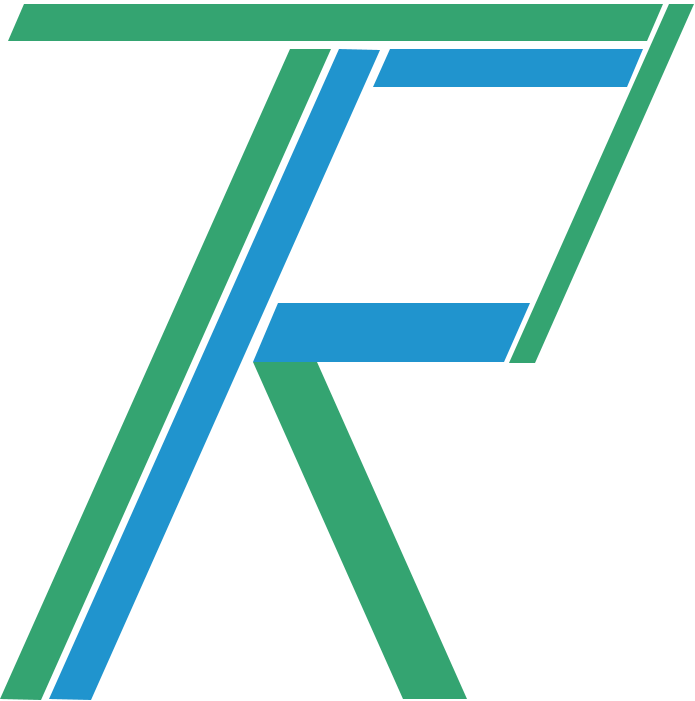

Tianfu Robotics
This website demonstrates our work at Tianfu Robotics, Chengdu.
We firstly focused on building intelligent robots for construction industry and later dived into aesthetic industry. We are building accuracy 3D scanning and analysis system for our customers.
If you find our work interesting or have any questions about it, send email to Kanzhi to learn more.